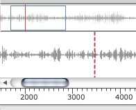
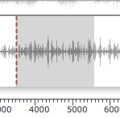
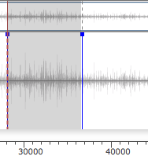

The Sound Editor
Double click on an initialized sound box to open its sound editor.
The sound editor displays the sund wave form as well as a number of additional information : file name, format, sample rate (SR), sample size.
Navigation and Playback
Use the palette button or the space key to play/stop the sound file.
Some playback parameter are accessible at the bottom part of the editor : volume controller, L/R panning, and audio track.
It is also possible, when several players are available, to chosse among them the one to use for playing the sound (Player menu).
Use the ruler at the bottom of the waveform display to zoom in/out, and the scrollbar to navigate in the sound. The button resets the orginal scale. |  |
The red vertical line is a cursor indicating the starting point for the playback of the sound.
Click anywhere on the main panel to set the cursor start position.
You can select a specific region in the sound using the tool of the palette. When a region is selected, the space play command will trigger playback of this region only. To play a region from the palette, use the button. |  |
You can drag a selected region from the sound editor to a patch window in order to create a new sound box with the selected part of the sound.
Markers
The sound markers are also visible in the sound editor, and can be added, moved or deleted from this window.
|
Double click in a region between two markers to select it. This region can then be played or used to create a new sound extract (see above). |  |
Too small regions (under a 200ms) may not be played or extracted correctly.